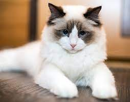

Ragdoll
Ragdoll cats are known to be gentle, calm and sociable. Affectionate without being demanding, Ragdolls have an almost dog-like devotion to their owners. Some people also say they are attuned to emotional needs, a characteristic that makes them a perfect companion animal. (Click image for more info)
Maine Coon

They are calm and affectionate gentle giants. The Maine Coon is known for its large size and thick double coat of long hair which is well suited for the harsh winters in Maine, the state from which they originated. Relaxed and laid-back, Maine Coons are not overly dependent, but they are people oriented. (Click image for more info)
Siamese
Siamese cats are social, affectionate, clever animals who make loving and loyal pets. Described as being "dog-like," these kitties mesh well into most families. The Siamese cat is a bright, intelligent feline with a handsome appearance and charming personality who can't help but draw admirers wherever he goes. (Click image for more info)
British Shorthair
The British Shorthair has a broad chest, muscular neck, strong jaws and a well developed muzzle. The legs are thick and strong. The breed looks like what she originally was, a cat that was to keep rodents out of the barn and the house. The coat of the British is thick and dense. (Click image for more info)
Persian

Persian cats are medium-sized, usually weigh between seven and 12 pounds, and measure from 10-15 inches tall. They have a rounded head, small, rounded ears, and big eyes. They also typically have a flat and pushed-in looking face with chubby cheeks. (Click image for more info)